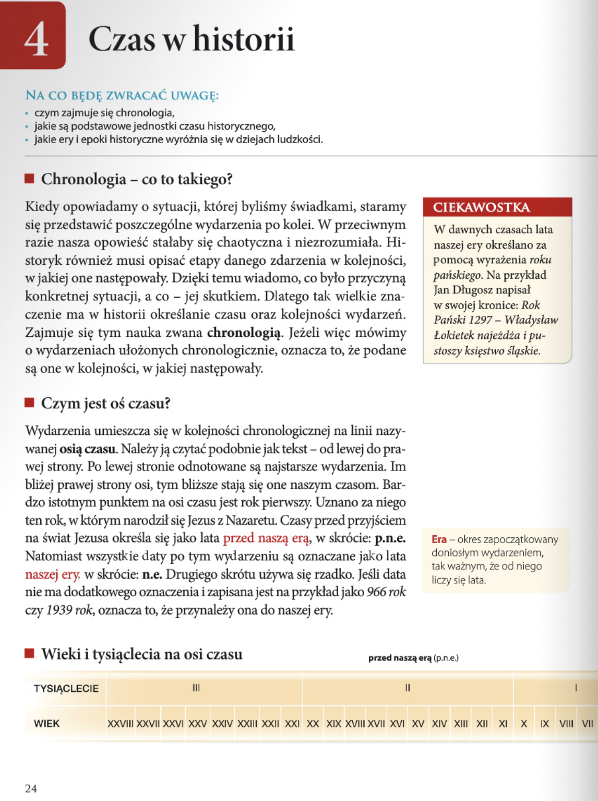
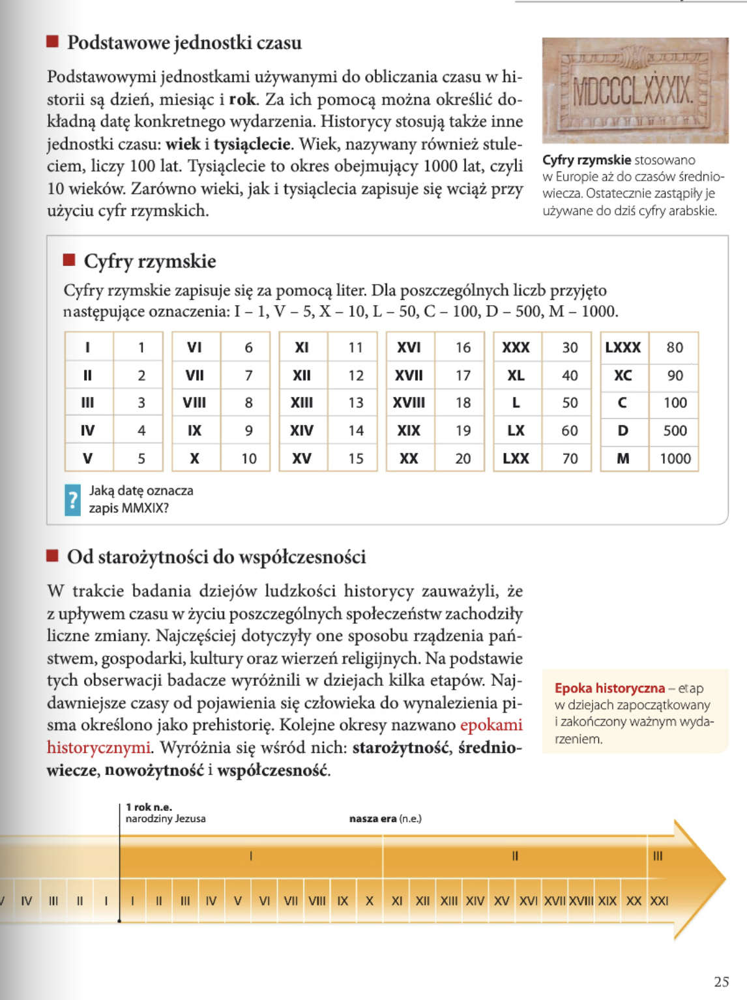
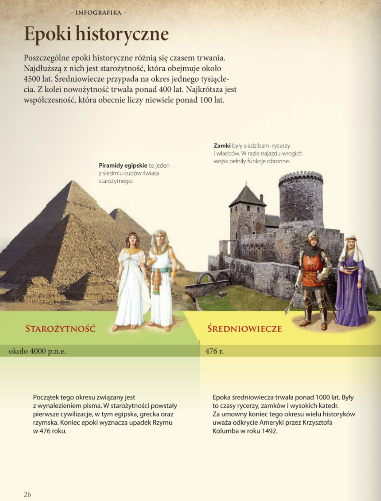
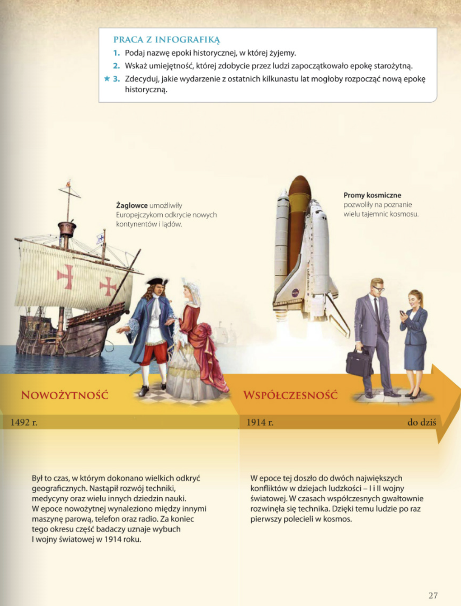
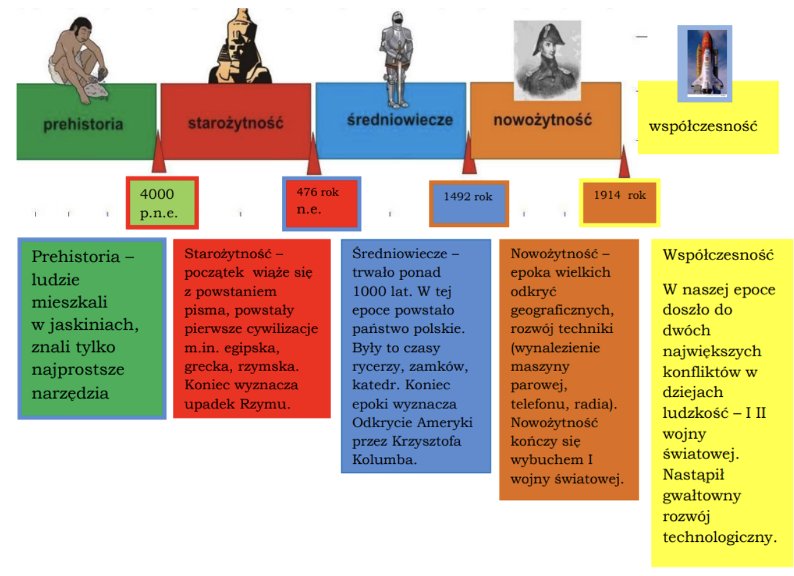
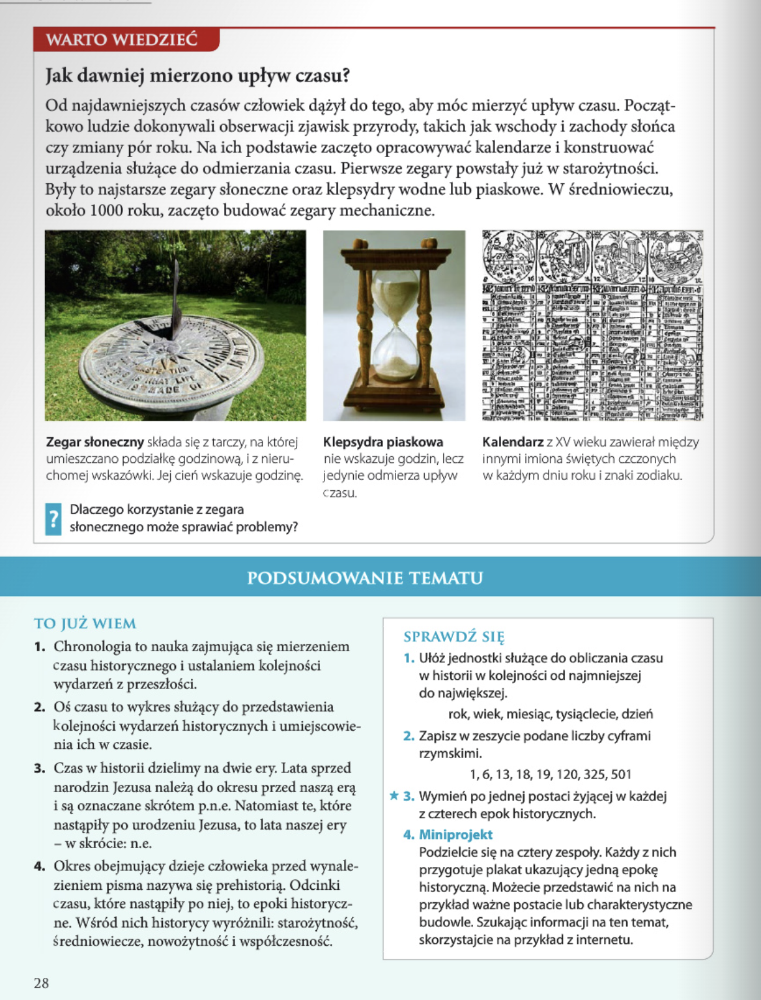

Historia
Rozdział I: Z historią na Ty
4 - Czas w historii
- chronologia i przedmiot jej badań;
- oś czasu i sposób umieszczania na niej dat;
- podstawowe określenia czasu historycznego (data, okres p.n.e. i n.e., tysiąclecie, wiek);
- cyfry rzymskie oraz ich arabskie odpowiedniki;
- epoki historyczne: starożytność, średniowiecze, nowożytność, współczesność oraz ich daty graniczne.
Zagadnienia
- czym zajmuje się chronologia,
- jakie są podstawowe jednostki czasu historycznego,
- jakie ery i epoki historyczne wyróżnia się w dziejach ludzkości.
NA CO BEDE ZWRACAĆ UWAGĘ:
lekcja 4 - Czas w historii >>
strona 24

Chronologia - co to takiego?
Kiedy opowiadamy o sytuacji, której byliśmy świadkami, staramy się przedstawić poszczególne wydarzenia po kolei. W przeciwnym razie nasza opowieść stałaby się chaotyczna i niezrozumiała. Historyk również musi opisać etapy danego zdarzenia w kolejności, w jakiej one następowały. Dzięki temu wiadomo, co było przyczyną konkretnej sytuacji, a co - jej skutkiem. Dlatego tak wielkie znaczenie ma w historii określanie czasu oraz kolejności wydarzeń. Zajmuje się tym nauka zwana chronologią. Jeżeli więc mówimy o wydarzeniach ułożonych chronologicznie, oznacza to, że podane są one w kolejnożci, w jakiej następowały.
Czym jest oś czasu?
Wydarzenia umieszcza się w kolejności chronologicznej na linii nazywanej osią czasu. Należy ją czytać podobnie jak tekst - od lewej do prawej strony. Po lewej stronie odnotowane są najstarsze wydarzenia. Im bliżej prawej strony osi, tym bliższe stają się one naszym czasom. Bardzo istotnym punktem na osi czasu jest rok pierwszy. Uznano za niego ten rok, w którym narodził się Jezus z Nazaretu. Czasy przed przyjściem na świat Jezusa określa się jako lata przed naszą erą, w skrócie: p.n.e. Natomiast wszystkie daty po tym wydarzeniu są oznaczane jako lata naszej ery, w skrócie: n.e. Drugiego skrótu używa się rzadko. Jeśli data nie ma dodatkowego oznaczenia i zapisana jest na przykład jako 966 rok czy 1939 rok, oznacza to, że przynależy ona do naszej ery.
Era - okres zapoczątkowany doniosłym wydarzeniem, tak ważnym, że od niego liczy się lata.
CIEKAWOSTKA
W dawnych czasach lata naszej ery określano za pomocą wyrażenia roku pańskiego. Na przykład Jan Dlugosz napisal w swojej kronice: Rok Pański 1297 - Władysław Łokietek najeżdża i pustoszy księstwo śląskie.
Chronologia - co to takiego?
Chronologia - nauka o mierzeniu czsu, kolejności następowania po sobie wydarzeń i zjawisk, a taże o oznaczeniu wydarzeń i zjawisk na podstawie przyjętego podziału czasu.
Nazwa pochodzi od greckoch słów chronos (czas) i logos (słowo, nauka)
Wydarzenia ułożone chronologicznie to wydarzenia podane w kolejności, w której po sobie następowały.
Oś czasu
Wydażenia ułożone w kolejności chronologicznej można przedstawić na tzw. osi czasu, która czytamy od lewej do prawej. Polewej stronie umeszczone są nastarsze wydarzenia, im blizej prawej strony tym wydarzenia bliższe są naszym czasom.

Rok pierwszy na osi czasu oznacza rok narodziń Jezusa Cgrysta. Wszystkie daty zaczynające się od tego riku stanowią b.violet nasza era(n.e). Czasy przed narodzinami Chrysta oznaczamy jako lata pred naszą erą (p.n.e)
Jeżeli czytamy o dacie, która nie posiada żadnego oznaczenia to, że przynależy do naszej ery.
Nie było roku zerowego! Dlatego, jeśli obliczamy upływ czasu między erami (np. długość życia lub panowania), to dodajemy obie daty i od wyniku odejmujemy 1.
Oś czasu – linia, na której zamieszcza się daty wydarzeń uporządkowane chronologicznie. Strzałka po prawej stronie oznacza kierunek upływu czasu.
strona 25
Podstawowe jednostki czasu
Podstawowymi jednostkami używanymi do obliczania czasu w historii są dzień, miesiąc i rok. Za ich pomocą można określić dokładną datę konkretnego wydarzenia. Historycy stosują także inne jednostki czasu: wiek i tysiąclecie. Wiek, nazywany również stule ciem, liczy 100 lat. Tysiąclecie to okres obejmujący 1000 lat, czyli 10 wiekow. Zarówno wieki, jak i tysiąclecia zapisuje się wciaz przy użyciu cyfr rzymskich.
Cyfry rzymskie stosowano w Europie aż do czasów średniowiecza. Ostatecznie zastąpiły je używane do dziś cyfry arabskie.
Od starożytności do współczesności
W trakcie badania dziejów ludzkości historycy zauważyli, że z upływem czasu w życiu poszczególnych społeczeństw zachodziły liczne zmiany. Najczęściej dotyczyły one sposobu rządzenia państwem, gospodarki, kultury oraz wierzeń religijnych. Na podstawie tych obserwacji badacze wyróżnili w dziejach kilka etapów. Naj dawniejsze czasy od pojawienia się człowieka do wynalezienia pisma określono jako prehistorię. Kolejne okresy nazwano epokami historycznymi. Wyróżnia się wsród nich: starozytność, średniowiecze, nowożytność i wspólczesność.
Epoka historyczna - etap w dziejach zapoczątkowany i zakończony ważnym wydarzeniem.
Podstawowe jednostki czasu:
- Rok
- Wiek - 100 lat
- Półwiecze – 50 lat.
- Tysiąclecie – 1000 lat.
Wieki, półwiecza i tysiąclecia zapisujemy cyframi rzymskimi.
I - 1
V - 5
X - 10
L - 50
C - 100
D - 500
M - 1000

strona 26


strona 27
Epoki historyczne
Poszczególne epoki historyczne różnią się czasem trwania. Najdluższą z nich jest starożytność, która obejmuje około 4500 lat. Średniowiecze przypada na okres jednego tysiąclecia. Z kolei nowożytność trwała ponad 400 lat. Najkrótsza jest współczesność, która obecnie liczy niewiele ponad 100 lat.
Piramidy egipskie to jeden z siedmiu cudów świata starozytnego.
Zamki były siedzibami rycerzy i władców. W razie najazdu wrogich wojsk pelniły funkcje obronne.
Epoka historiczna - etap w dziejachzapoczątkowany i zakończony ważnym wydarzeniem.
- Prehistoria (epoka przedhistoryczna) – od ok. 4 mln lat temu do ok. 4000 lat p.n.e.
- Starożytność – od ok. 4000 lat p.n.e. do 476 r. n.e.
- Średniowiecze – od 476 r. do 1492 r
- Nowożytność – od 1493 r. do 1914 r.
- Współczesność – od 1914 r. do dziś.

STAROŻYTNOŚĆ
około 4000 p.n.e. do 476 r. n.e.
Początek tego okresu związany jest z wynalezieniem pisma. W starożytnościpowstały pierwsze cywilizacje, w tym egipiska, grecka oraz rzymska. Koniec epoki wyznacza upadek Rzymu w 476 roku.
ŚREDNIOWIECZE
od 476 r. do 1492 r.
Epoka średniowiecza trwała ponad 1000lat. Były to czasy rycerzy, zamków i wysokich katedr. Za umowy koniec tego okresu wielu historyków uważa odrycie Ameryki przez Krzysztofa Kolumba w roku 1492.
NOWOŻYTNOŚĆ
od 1492 r. do 1914 r.
Był to czas, w którym dokonano wielkich odkryć geograficznych. Nastąpił rozwój techniki, medycyny oraz wielu innych dziedzin nauki. W epoce nowożytnej wynaleziono między innymi maszynę parową, telefon oraz radio. Za koniec tego okresu część badaczy uznaje wybuch I wojny światowej w 1914 roku.
WSPÓŁCZESNOŚĆ
od 1914 r. do dziś.
W epoce tej doszło do dwóch największych konfliktów w dziejach ludzkości - I i II wojny światowej. W czasach współczesnych gwałtownie rozwinęła się technika. Dzięki temu ludzie po raz pierwszy polecieli w kosmos.
strona 28

Jak dawniej mierzono upływ czasu?
Od najdawniejszych czasów człowiek dążył do tego, aby móc mierzyć upływ czasu. Początkowo ludzie dokonywali obserwacji zjawisk przyrody, takich jak wschody i zachody słońca czy zmiany pór roku. Na ich podstawie zaczęto opracowywać kalendarze i konstruować urządzenia służące do odmierzania czasu. Pierwsze zegary powstały już w starożytności. Były to najstarsze zegary słoneczne oraz klepsydry wodne lub piaskowe. W średniowieczu, około 1000 roku, zaczęto budować zegary mechaniczne.